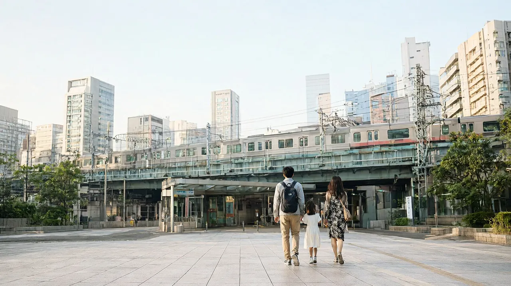

도쿄 여행 가이드
하네다·나리타 두 공항, 숙소 권역과 Suica 선택이 핵심인 가족 도시

환산 기준은 100엔=837.81원이며 1엔은 약 8.4원입니다 (서울외국환중개 매매기준율, 2026-10-21 15:30, 연합뉴스). 원화는 모두 "약"입니다. 괄호 안 이름은 값을 확인한 출처입니다. "비공식"은 공식 자료가 아닌 안내 사이트 값, "확인 필요"는 이번에 확인하지 못한 항목, "가정치"는 작성자가 세운 기준입니다.
공항이 두 곳이라 어디로 들어오느냐에 따라 첫날 컨디션이 달라지고, 숙소 위치와 교통카드 선택이 며칠 동안의 이동량을 정하는 도시입니다. 초등 아이와 갈 만한 곳은 많지만 예약이 필요한 곳과 쉬는 날이 제각각이라, 날짜부터 정하고 일정을 채우는 순서가 편합니다.
한눈에 보기
| 항목 | 내용 | 기준 |
|---|---|---|
| 추천 일수 | 3박 4일. 근교 하루나 디즈니를 넣으면 4박 5일 | 작성자 판단 |
| 비행 시간 | 인천·김포 출발 약 2시간 5분~2시간 40분 (방향과 편에 따라 차이) | 도쿄렌트의 항공사 시간표 정리(비공식). 항공사 시간표 확인 필요 |
| 아이 적합도 | 높음 | 초등 아이가 즐길 시설이 많고 비 오는 날 대안도 있음 (‘아이 동반 코스’ 항목) |
이 도시가 맞는 사람
| 구분 | 내용 |
|---|---|
| 잘 맞는 유형 | 테마파크와 체험 시설을 넣고 싶은 가족, 쇼핑과 먹거리를 함께 즐기고 싶은 가족, 일정 중 하루를 근교로 쓰고 싶은 가족 |
| 덜 맞는 유형 | 한곳에 오래 머무는 느린 여행(권역이 넓어 이동이 잦음), 2박 3일 이하에 많은 곳을 넣으려는 경우, 숙박비를 최대한 줄이려는 경우(숙박 요금은 확인 필요) |
| 주의 | 하네다로 들어오는지 나리타로 들어오는지에 따라 시내 도착 시간이 크게 달라집니다 (‘공항에서 시내까지’ 항목) |
공항에서 시내까지
도쿄는 하네다와 나리타 두 공항을 씁니다. 하네다는 시내와 가깝고 나리타는 한 시간 넘게 걸립니다. 항공권 가격이 비슷하면 시내 이동 시간과 요금까지 더해서 비교하세요. 열차별 상세는 하네다·나리타에서 도쿄 시내까지에 있습니다.
하네다공항에서
주요 역까지 걸리는 시간은 대략 이렇습니다 (하네다공항 공식, 대략적인 값).
| 도착지 | 소요시간 |
|---|---|
| 시나가와 | 약 15분 |
| 하마마쓰초 | 약 20분 |
| 도쿄역 | 약 30분 |
| 요코하마 | 약 30분 |
| 우에노·아사쿠사 | 약 40분 |
| 시부야 | 약 45분 |
| 신주쿠 | 약 50분 |
| 마이하마(디즈니) | 약 50분 |
| 노선 | 도착지 | 소요시간 | 요금(성인 편도) | 막차 | 추천 대상 |
|---|---|---|---|---|---|
| 게이큐 공항선 + JR 야마노테선 환승 | 신주쿠 | 약 41분 | 590엔(약 4,900원) | 제3터미널 출발 00:08 (시나가와 JR 환승 막차 00:20) | 신주쿠·시부야 방면, 가장 저렴하게 |
| 게이큐 공항선 | 시나가와 | 약 15~20분 | 330엔(약 2,800원) | 00:08 | 시나가와·도쿄역 방면, 신칸센 환승 |
| 공항 리무진 버스 | 신주쿠 | 약 55분 (교통 상황에 따라 변동) | 1,400엔(약 1.2만원) | 23:40 | 짐이 많거나 환승이 부담스러운 가족 |
| 도쿄 모노레일 | 하마마쓰초 | 약 13~17분 | 520엔(약 4,400원) | 평일 제3터미널 출발 00:10 | 하마마쓰초 방면 숙소 |
(소요시간은 하네다공항 공식, 요금·막차는 airport.tokyo 2026-10-01 확인 표기입니다. 막차는 평일과 주말이 같다고 표기돼 있지만 선로 사정으로 바뀔 수 있습니다. 모노레일은 도쿄 모노레일 공식 요금표·평일 시각표 기준 2026-10-22 확인이며 주말·휴일 막차는 확인 필요입니다.)
나리타공항에서
| 노선 | 도착지 | 소요시간 | 요금(성인 편도) | 막차(나리타 출발) | 추천 대상 |
|---|---|---|---|---|---|
| 나리타 익스프레스(N'EX) | 도쿄역 | 약 55~75분 | 3,140엔(약 2.6만원) | 21:44 | 환승 없이 도쿄역 방면 |
| N'EX | 신주쿠 | 약 85~100분 | 3,330엔(약 2.8만원) | 21:44 | 신주쿠·시부야 방면 |
| N'EX | 시나가와 | 약 69분 | 3,330엔(약 2.8만원) | 21:44 | 시나가와 방면 |
| 게이세이 스카이라이너 | 닛포리·게이세이우에노 | 최단 약 36분(닛포리), 약 41분(우에노) | 현장 2,580엔(약 2.2만원), 외국인 온라인 2,310엔(약 1.9만원) | 23:00 (우에노 도착 23:48) | 우에노·아사쿠사 방면, 가장 빠르게 |
| 게이세이 액세스 특급 (도에이 아사쿠사선·게이큐선 직통) | 시나가와 | 약 95분 | 1,520엔(약 1.3만원) | 평일 20:34, 주말·휴일 22:08 | 가장 저렴, 시간 여유가 있을 때 |
| 공항버스 도쿄·나리타 | 도쿄역 | 최소 약 65분 | 1,500엔(약 1.3만원, 심야·새벽 편 제외) | 확인 필요 | 예산 우선 |
| 리무진 버스 | 도쿄역 야에스 북쪽 출구 | 약 75~100분 (시각표상) | 3,100엔(약 2.6만원) | 20:45 (제1터미널 출발) | 호텔 가까이까지 |
(출처: NAVITIME 2026-04·06 게시 글(2026-10 기준 표기), JR 동일본 공식 N'EX 요금, 게이세이 공식 스카이라이너·액세스 특급 요금, 리무진버스 공식 요금·시각표, 막차는 airport.tokyo 2026-10-01 확인 표기. 정정: 이전 초안의 N'EX 시나가와 3,325엔은 공식 3,330엔, 액세스 특급 시나가와 1,630엔은 공식 1,520엔입니다.)
- 외국인 방문자 전용 N'EX 도쿄 왕복 티켓은 5,200엔(약 4.4만원), 14일간 유효합니다. 신주쿠·시부야·시나가와·요코하마 구간도 같은 가격으로 표기돼 있습니다 (NAVITIME).
- N'EX는 행선지별로 칸을 나누므로 탑승 전에 칸 행선지를 확인하세요.
- 어린이(만 6~11세): N'EX 도쿄역 1,570엔·신주쿠 1,665엔(성인의 절반, 그린 차량은 성인과 동일), 스카이라이너 1,290엔(온라인 1,150엔), 액세스 특급 시나가와 770엔 (JR 동일본·게이세이 공식). 하네다 리무진 신주쿠 700엔, 나리타 리무진 도쿄역 1,550엔 (리무진버스 공식). 공항버스 도쿄·나리타의 어린이 요금은 확인 필요입니다.
- 2026년 11월 6일 저녁과 8일 오전에는 N'EX 일부 편이 운행 구간이 바뀌어 도쿄역 발착으로 운영되고, 11월 7일에는 N'EX가 신주쿠·오후나 방면 운휴로 도쿄역 발착만 운행합니다. 같은 날 요코스카선·소부 쾌속선은 도쿄~시나가와 구간이 종일 운휴입니다 (JR 동일본 공식). 이 기간에 나리타로 도착하거나 출발한다면 스카이라이너나 액세스 특급을 대안으로 보세요.
- 심야 도착이면 노선 사이 환승 연결이 보장되지 않습니다. 마지막 열차 시간을 도착 전에 확인하세요 (airport.tokyo).
어느 공항이 가족에게 나은가
| 비교 | 하네다 | 나리타 |
|---|---|---|
| 시내까지 시간 | 도쿄역 약 30분, 시나가와 약 15분 | 도쿄역 약 55~75분, 우에노 최단 약 41분 |
| 가장 싼 방법 | 시나가와 330엔, 신주쿠 590엔 | 시나가와 1,520엔(약 95분) |
| 막차 | 00:08 (제3터미널) | N'EX 21:44, 스카이라이너 23:00 |
| 항공 | 인천·김포에서 가능 (일부 편은 늦은 밤 도착) | 인천에서 가능 |
숙소 권역
도쿄는 권역이 넓어서 어디에서 자느냐가 하루 이동량을 정합니다. 아래 소요시간은 확인한 공식·안내 수치만 적었습니다.
| 권역 | 장점 | 단점 | 적합 동행 |
|---|---|---|---|
| 신주쿠 | 하네다에서 약 41분(JR 환승), 나리타에서 N'EX 직행 약 85~100분. 하코네행 로망스카가 신주쿠에서 출발(약 80분) | 역과 주변이 넓어 짐이 많으면 숙소 위치를 미리 봐야 함 (작성자 판단) | 쇼핑과 근교를 함께 넣는 가족 |
| 도쿄역·긴자 | 하네다에서 약 30분, 나리타에서 N'EX 직행 약 55~75분. JR 요코스카선으로 가마쿠라까지 약 60분 | 중심가라 숙박비가 높을 가능성 (확인 필요) | 신칸센이나 근교 이동이 많은 가족 |
| 우에노·아사쿠사 | 나리타에서 스카이라이너로 약 41분. 우에노 동물원이 JR 우에노역 공원 출구에서 걸어서 약 5분 | 하네다에서는 약 40분. 숙소 위치에 따라 JR·지하철 선택이 갈림 | 나리타 이용 가족, 동물원 일정이 있는 가족 |
| 시나가와·하네다 인근 | 하네다에서 약 15분, 도쿄역·신주쿠·요코하마 방면 환승이 쉬움 | 시내 중심지와는 떨어져 관광 이동이 한 번 더 필요 (작성자 판단) | 이른 아침이나 늦은 밤 비행기를 타는 가족 |
디즈니 일정이 있다면 마이하마 방면 이동도 따져보세요. JR 게이요선·무사시노선으로 마이하마역에 가면 도쿄 디즈니랜드는 걸어서 약 5분이고, 디즈니씨는 디즈니 리조트 라인 1회 300엔(어린이 150엔)입니다 (VoyageWindow가 인용한 디즈니 공식 안내, 리조트 라인 요금은 디즈니 리조트 공식).
시내 교통 (Suica 등)
| 수단 | 내용 | 출처 |
|---|---|---|
| 일반 Suica·PASMO | 보증금 500엔(환불 가능)에 충전금을 더해 구입. 환불은 발급한 회사 창구에서만 가능하니 출국 공항에 창구가 있는지 확인 | GO TOKYO, Tabinoko |
| Welcome Suica·Tourist PASMO | 단기 방문 외국인용. 보증금이 없고 남은 금액은 환불되지 않음. 유효기간 28일은 첫 사용일이 아니라 구입일부터 셈. 하네다·나리타공항 등에서 판매 | GO TOKYO, JR 동일본 공식, Tabinoko |
| 어린이용 Welcome Suica | 전용 발매기로 발급 가능한 곳은 나리타공항, 나리타공항 제2·3터미널 빌딩, 하네다공항 제3터미널 세 곳 (2026-07 기준) | Tabinoko |
| 어린이 요금 | 만 6~11세는 성인의 절반. 취학 전 유아의 무료 규정은 확인 필요 | Tabinoko, DealTokyo |
| 도쿄 서브웨이 티켓 | 도쿄 메트로·도에이 지하철 무제한. 24시간 1,000엔(어린이 500엔), 48시간 1,500엔(어린이 750엔), 72시간 2,000엔(약 1.7만원, 어린이 1,000엔). 단기 체류 여권 확인 필요, JR 미포함 | GO TOKYO, DealTokyo |
| 도쿄 메트로 1회 | IC카드 기준 1~6km 178엔, 7~11km 209엔 (2026-09 기준) | DealTokyo |
작성자 계산: 메트로 한 번이 대략 180~320엔이라 24시간권(1,000엔)은 하루 4~5회 이상 탈 때부터 본전입니다. JR을 자주 탄다면 IC카드가 필요하고, 서브웨이 티켓은 보조 수단으로 보는 편이 맞습니다 (Tabinoko 해설과 같은 방향).
추천 일정
전체 일정은 도쿄 3박 4일 가족 일정에 있습니다. 아래는 휴관일과 예약 규정을 반영한 뼈대이며 하루 2~3곳으로 잡았습니다.
| 일정 | 일차 | 요약 |
|---|---|---|
| 2박 3일 | 1일차 | 도착, 숙소 짐 맡기기, 우에노 동물원 (월요일 휴원 주의) |
| 2일차 | 지브리 미술관(사전 예약) 또는 디즈니 중 하나만 | |
| 3일차 | 쇼핑 후 공항 이동 (공항 2시간 전 도착 목표, ‘귀국 동선’ 항목) | |
| 3박 4일 | 1일차 | 도착, 숙소 근처 산책과 식사 |
| 2일차 | 지브리 미술관 + 신주쿠 쇼핑 | |
| 3일차 | 디즈니랜드 또는 디즈니씨 한 곳, 혹은 팀랩 플래닛 + 우에노 | |
| 4일차 | 체크아웃, 면세 쇼핑 정리, 공항 이동 | |
| 4박 5일 | 1~2일차 | 3박 4일과 같음 |
| 3일차 | 근교 당일치기 한 곳 (‘근교 당일치기’ 항목) | |
| 4일차 | 디즈니 한 곳 (티켓은 날짜·파크 지정) | |
| 5일차 | 귀국 |
- 비 오는 날 대안: 요코하마의 컵누들 뮤지엄과 안팡만 어린이 뮤지엄 (‘근교 당일치기’ 항목). 미라이칸은 휴관 중이라 제외합니다 (‘아이 동반 코스’ 항목).
아이 동반 코스
| 시설 | 예약 | 요금 | 운영 | 메모 |
|---|---|---|---|---|
| 지브리 미술관(미타카) | 필수. 현장 판매 없음, 날짜·시간 지정 | 19세 이상 1,000엔 / 13~18세 700엔 / 7~12세 400엔(약 3,400원) / 4~6세 100엔 / 3세 이하 무료 | 10:00~18:00. 2026년 11월 휴관은 4~18일과 24일, 12월은 1·8·15·22일과 27~31일 (공식 달력, 2026-10-22 확인) | 로손 티켓에서 매월 10일 10:00(일본 시간)에 다음 달 분 판매. 12월 방문이면 11월 10일 판매 (지브리 미술관 공식) |
| 우에노 동물원 | 불필요 (온라인 티켓도 있음) | 성인 600엔(약 5,000원), 65세 이상 300엔, 초등학생 이하 무료 | 9:30~17:00, 입장 16:00까지. 월요일 휴원(월요일이 공휴일이면 다음 날) | 일부 동물은 일찍 실내로 들어가니 오전 방문이 안전 (우에노 동물원 공식) |
| 팀랩 플래닛 | 필수. 온라인 판매만 | 성인 3,800엔~(날짜별 변동), 중·고등학생 2,800엔, 4~12세 1,500엔(약 1.3만원), 3세 이하 무료 | 8:00~22:00 (마지막 입장 21:00). 2026년 11월 5일·12월 3일 휴관 | 입장 시간 지정, 입장 2시간 전까지 3회 변경 가능. 취소·환불 불가. 13세 미만은 18세 이상 보호자 동반, 어린이 3명당 성인 1명 필요 (팀랩 공식) |
| 도쿄 디즈니랜드·디즈니씨 | 날짜·파크 지정 티켓 필수 | 성인 평일 10,900엔(약 9.1만원) / 일요일 11,900엔 / 토요일 12,400엔 (2026년 10월·12월 달력 기준). 어린이(4~11세) 최저 5,300엔(약 4.4만원), 4세 미만 무료 | 파크별 운영시간 확인 필요 | 한 티켓으로 한 파크만 입장. 프리미어 액세스는 별도 유료. 판매 시점과 잔여는 확인 필요 (디즈니 리조트 공식 요금표, VoyageWindow) |
| 미라이칸 | - | 성인 630엔, 18세 이하 210엔 | 2026-10-01~2027-04-22 개보수 휴관 | 이 기간에는 일정에 넣지 마세요 (미라이칸 공식) |
- 유모차·수유실·휴식 공간은 시설마다 다르고 공식 확인을 못 해서 확인 필요입니다. 요코하마 안팡만 어린이 뮤지엄은 기저귀 교환대가 있다고 요코하마시 안내에 표기돼 있습니다.
- 예약이 필요한 지브리, 팀랩, 디즈니는 항공권보다 먼저 날짜를 잡고, 같은 날 두 곳 이상 넣지 마세요 (작성자 판단).
맛집 시간대
아래는 시간대별 틀이며 금액은 확인 필요입니다.
| 시간대 | 선택지 | 예약 |
|---|---|---|
| 아침 | 호텔 조식, 편의점, 카페 | 호텔 조식은 숙소 요금제 확인 |
| 점심 | 정식집, 덮밥, 라멘 등 시설 근처 식당 | 대부분 불필요 (작성자 판단, 확인 필요) |
| 저녁 | 가족 식당, 철판구이나 전골류 | 인기 식당은 예약 권장 (확인 필요) |
| 야식 | 편의점, 늦게까지 여는 식당 | 불필요 |
확인된 아이 식사 정보 하나: 요코하마 컵누들 뮤지엄의 세계 면 코너는 반 그릇 한 접시 500엔(약 4,200원)입니다 (컵누들 뮤지엄 공식).
근교 당일치기
| 목적지 | 이동 | 요금 | 메모 |
|---|---|---|---|
| 하코네 | 신주쿠에서 로망스카로 하코네유모토까지 약 80분 | 하코네 프리패스(신주쿠 출발) 2일권 성인 7,100엔(약 5.9만원), 어린이(6~11세) 1,600엔. 로망스카 편도 성인 +1,200엔, 어린이 +600엔. 프리패스에 로망스카 왕복을 더하면 성인 9,500엔(약 8.0만원) (오다큐 공식) | 3일권은 성인 7,500엔, 어린이 1,850엔. 2일권부터 있어서 당일치기는 본전 계산이 필요. 상세는 하코네 여행 가이드 |
| 가마쿠라·에노시마 | 도쿄역에서 JR 요코스카선으로 약 60분 (가마쿠라 관광협회 안내를 VoyageWindow가 인용) | JR 운임은 2026-03-14 개정 이후 값 확인 필요. 신주쿠 출발 오다큐 에노시마·가마쿠라 프리패스 성인 1,640엔(약 1.4만원), 어린이 430엔 | 가마쿠라 대불 성인 300엔, 어린이(6~12세) 150엔 |
| 요코하마 | 도쿄역에서 JR 도카이도선으로 약 30분 (역탐, 비공식. JR 약 27분) | JR 530엔(약 4,400원) (역탐, 비공식) | 컵누들 뮤지엄 성인 500엔, 고교생 이하 무료, 10:00~18:00(입장 17:00까지), 화요일 휴관. 안팡만 어린이 뮤지엄 2·3층 2,200~2,600엔(날짜별), 1층 무료, 10:00~17:00(입장 16:00까지). 상세는 요코하마 여행 가이드 |
요코하마 값은 JR 동일본 공식 운임표를 열지 못해 역탐 기준 비공식 값입니다. 하네다에서 곧바로 가는 약 30분(하네다공항 공식)과는 출발지가 다릅니다.
현지 팁·주의
- 2026년 11월 1일 이후 구매분부터 면세는 환급 방식입니다. 매장에서는 세금 포함 가격을 내고 출국 때 세관 확인 후 환급받습니다 (일본 세관, 관광청).
- 하루에 권역 한두 곳만 묶으세요. 하네다에서 주요 역까지만 해도 15분에서 50분까지 차이가 납니다 (하네다공항 공식).
- 막차를 확인하세요. 하네다 제3터미널 게이큐 막차는 00:08, 나리타 출발 N'EX 마지막은 21:44입니다 (airport.tokyo).
- 2026년 11월 6일 저녁과 8일 오전에는 N'EX 일부 편이 운행 구간이 바뀌어 도쿄역 발착으로 운영되고, 11월 7일에는 N'EX가 신주쿠·오후나 방면 운휴로 도쿄역 발착만 운행합니다. 같은 날 요코스카선·소부 쾌속선은 도쿄~시나가와 구간이 종일 운휴입니다 (JR 동일본 공식). 이 날짜에 나리타를 쓴다면 대체 열차를 미리 정하세요.
- 지브리 미술관, 팀랩, 디즈니는 날짜를 정해 예약해야 합니다. 우에노 동물원은 월요일, 컵누들 뮤지엄은 화요일에 쉽니다.
- 미라이칸은 2027년 4월 22일까지 개보수 휴관입니다. 옛 블로그 일정을 그대로 따르지 마세요.
귀국 동선
- 나리타공항은 국제선 출발 최소 2시간 전 도착을 안내합니다 (나리타공항 공식). 아이 동반에 면세 환급 절차가 있으면 2시간 30분~3시간 전을 목표로 하는 편이 안전합니다 (작성자 권고).
- 체크아웃 후 공항까지는 ‘공항에서 시내까지’ 항목 표를 거꾸로 보세요. 하네다는 신주쿠 방면 약 41분, 나리타는 도쿄역 방면 N'EX로 약 55~75분입니다. 11월 6~8일 출국이면 ‘현지 팁·주의’ 항목의 N'EX 영향을 먼저 확인하세요.
- 면세 환급(2026-11-01 이후 구매분): 한 매장·하루 합계 5,000엔 이상(세금 제외) 구매가 대상이고, 구매 후 90일 이내 출국 때 여권으로 면세 절차 단말기를 거쳐야 합니다. 검사가 필요하다는 결과(붉은색)가 나오면 물건을 들고 세관 창구로 가야 하므로 짐을 부치기 전에 하세요. 나리타·하네다 등에서는 Visit Japan Web으로 온라인 절차도 가능합니다 (일본 세관, 관광청). 환급은 매장 또는 위탁 환급 업체가 진행하고 수수료는 매장마다 다를 수 있습니다.
- 2026년 10월 31일까지 구매분은 기존 방식(매장에서 면세 가격 적용)입니다.
- 자세한 절차: tax-free-2026-11, departure-checklist
FAQ
1. 하네다와 나리타 중 어느 쪽이 나은가요? 시내 이동은 하네다가 짧습니다(도쿄역 약 30분 대 약 55~75분). 대신 항공권 가격과 도착 시간을 같이 비교하세요. 비행 시간은 두 곳 모두 약 2시간 5분~2시간 40분 안팎입니다.
2. 교통카드는 꼭 필요한가요? JR을 탄다면 IC카드가 있는 편이 편합니다. 짧은 일정이면 보증금 없는 Welcome Suica, 오래 머물면 일반 Suica를 고려하세요. 일반 Suica의 보증금 500엔은 발급한 회사 창구에서만 돌려받습니다.
3. 도쿄 서브웨이 티켓을 사야 하나요? 메트로·도에이만 타는 날이 많고 하루 4~5회 이상 탄다면 이득입니다(작성자 계산). JR을 많이 탄다면 IC카드가 필요합니다.
4. 지브리 미술관은 당일 표를 살 수 있나요? 아니요. 모든 입장이 사전 예약제이고 현장 판매가 없습니다 (지브리 미술관 공식).
5. 디즈니랜드와 디즈니씨를 하루에 둘 다 갈 수 있나요? 현재 요금표의 1일권으로는 안 됩니다. 한 티켓이 한 날짜·한 파크에 해당합니다 (VoyageWindow가 인용한 디즈니 공식 안내).
6. 11월에 가면 면세 쇼핑이 달라지나요? 2026년 11월 1일 이후 구매분부터 세금 포함 가격으로 결제하고 출국 때 환급받는 방식으로 바뀝니다 (일본 세관).
7. 미라이칸은 지금 갈 수 있나요? 2026년 10월 1일부터 2027년 4월 22일까지 개보수로 쉽니다 (미라이칸 공식).
8. 11월 초에 나리타로 들어가도 되나요? 2026년 11월 6일 저녁과 8일 오전에는 N'EX 일부 편이 운행 구간이 바뀌어 도쿄역 발착으로 운영되고, 11월 7일에는 N'EX가 신주쿠·오후나 방면 운휴로 도쿄역 발착만 운행합니다. 같은 날 요코스카선·소부 쾌속선은 도쿄~시나가와 구간이 종일 운휴입니다 (JR 동일본 공식). 스카이라이너나 액세스 특급으로 바꾸거나 날짜를 옮기세요.
관련 글
| 글 | 상태 | 용도 |
|---|---|---|
| flight-total-cost (항공권 총액 비교) | 작성 중 | 항공 가격 확인 방법 |
| tax-free-2026-11 (2026년 11월 일본 면세 환급 절차) | 작성 중 | ‘귀국 동선’ 항목 상세 |
| departure-checklist (출국 전 체크리스트) | 작성 중 | 준비 단계 |
| no-data-esim (데이터가 안 될 때 대처법) | 작성 중 | 현장 대응 |
| 하네다·나리타에서 도쿄 시내까지 (하네다·나리타에서 시내까지) | 게시 검수 중 | ‘공항에서 시내까지’ 항목 상세 |
| 도쿄 3박 4일 가족 일정 (도쿄 3박 4일 가족 일정) | 게시 검수 중 | ‘추천 일정’ 항목 상세, 다음 단계 |
| 간토 권역 가이드 | 게시 검수 중 | 근교 이동 요금 비교 |
다른 도시 비교
| 도시 | 강조점 | 링크 |
|---|---|---|
| 요코하마 | 도쿄에서 약 30분(역탐, 비공식), 항구와 미나토미라이 당일치기 | 요코하마 여행 가이드 |
| 하코네 | 온천과 로망스카, 도쿄에서 1박 추가 | 하코네 여행 가이드 |
| 오사카 | 숙소(난바와 우메다), 유니버설 스튜디오, 근교 교토 | 오사카 여행 가이드 |
| 후쿠오카 | 공항에서 시내까지 가까움, 짧은 일정, 맛집 | 후쿠오카 여행 가이드 |
| 구마모토 | 아소와 구로카와 근교, 렌터카 | 구마모토 여행 가이드 |
업데이트 정보
- 정정 요청: 요금·시간은 바뀔 수 있으니 예약 전에 공식 사이트로 다시 확인하세요.
- 이력: 2026-10-22 첫 작성, 같은 날 본문 전체 재작성. 도시 허브는 180일 안에 다시 확인합니다.